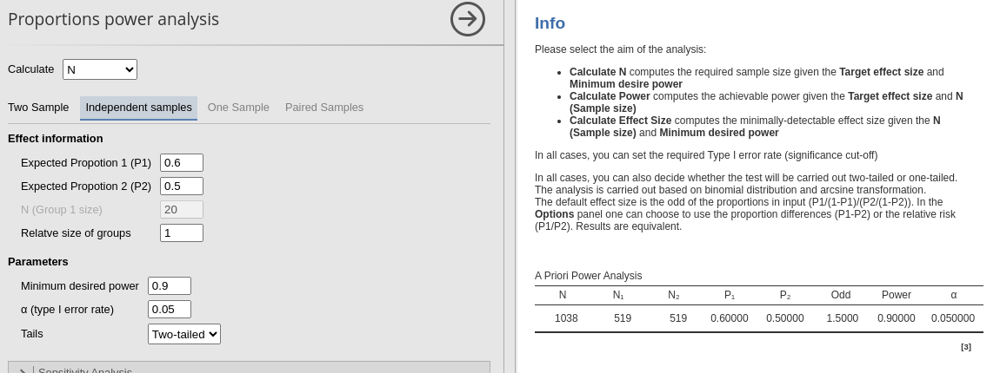
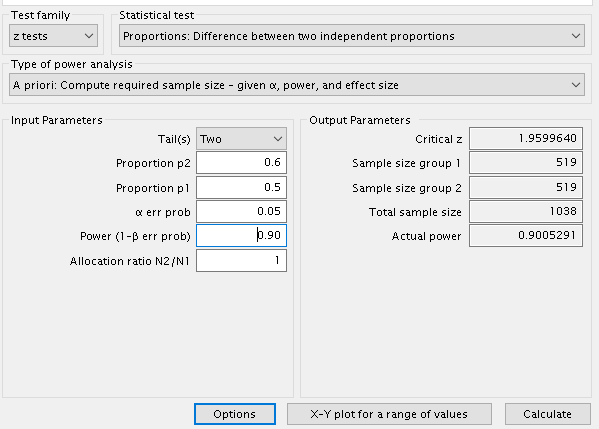
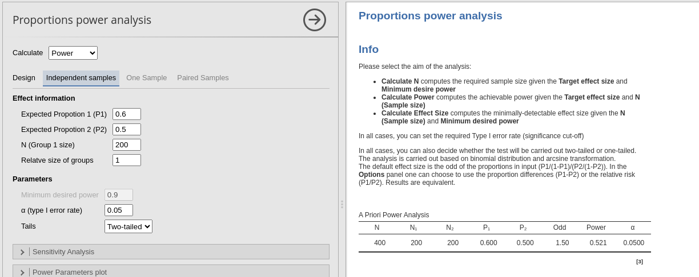
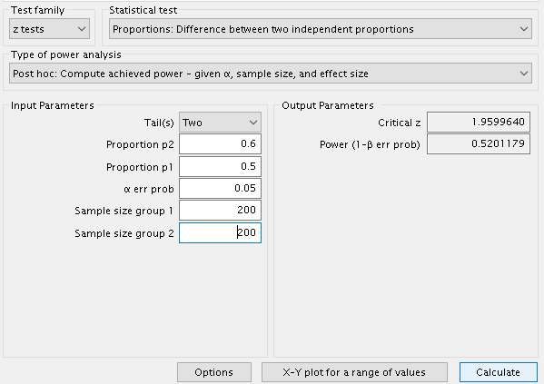
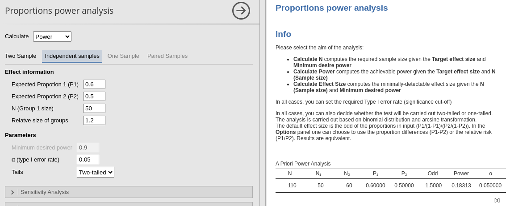
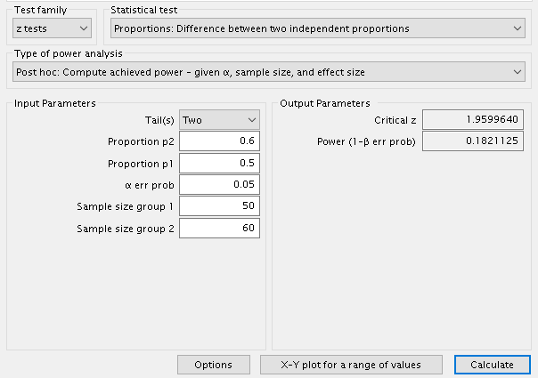

Independent Samples Proportions
Validation
0.2.0
Here we compare the results of PAMLj with other software that performs power analysis. In particular, we will compare our results with R pwr package and G*Power.
Each software employs a z-test after arch transforming the proportions.
Example 1: Sample size
Setup
- Aim = N
- P1 = .6
- P2 = .5
- Power = .90
- Alpha = .05
- Tails = Two
PAMLj

The expected N is 1038, 519 per group.
R
## [1] 0.2013579##
## Difference of proportion power calculation for binomial distribution (arcsine transformation)
##
## h = 0.2013579
## n = 518.3089
## sig.level = 0.05
## power = 0.9
## alternative = two.sided
##
## NOTE: same sample sizesceiling the results we obtain 519 cases per group.
G*Power

Results are the same.
Example 2 : Power
Setup
- Aim = Power
- P1 = .6
- P2 = .5
- N per group = 200
- Alpha = .05
- Tails = Two
PAMLj

R
## [1] 0.2013579##
## Difference of proportion power calculation for binomial distribution (arcsine transformation)
##
## h = 0.2013579
## n = 200
## sig.level = 0.05
## power = 0.5214145
## alternative = two.sided
##
## NOTE: same sample sizesG*Power

Results are almost the same, with a trivial difference of -0.0087034
Example 3: Unbalanced designs
Setup
- Aim = minimal effect size
- power = .95
- N per group = 52
- Alpha = .01
PAMLj

R
## [1] 0.2013579##
## difference of proportion power calculation for binomial distribution (arcsine transformation)
##
## h = 0.2013579
## n1 = 50
## n2 = 60
## sig.level = 0.05
## power = 0.1831314
## alternative = two.sided
##
## NOTE: different sample sizesG*Power

Again, results are the very similar.
Comments?
Got comments, issues or spotted a bug? Please open an issue on PAMLj at github or send me an email